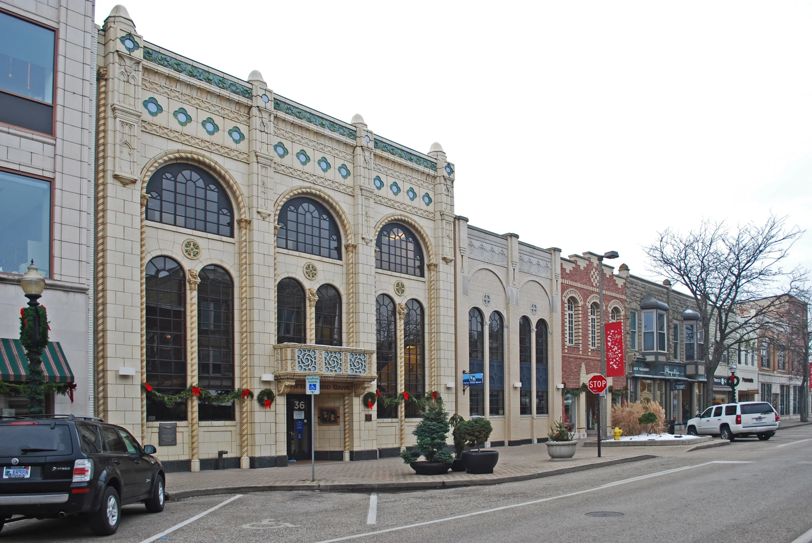

Who it is for
Visitors exploring Holland, including older adults and people who prefer larger text or a slower pace; content editors maintaining reusable local stories.
Civic experience / Accessible interaction
Holland Walking Tour
A welcoming walking guide for Holland, Michigan—with a simpler visitor flow and a clearer editorial process behind it.
Try the working prototype ↗Explore the screen collection ↗
Visitors need to understand a walk before committing to it, then keep their place without continually studying a screen. The people maintaining the stories need a practical way to review their accuracy.
Visitors exploring Holland, including older adults and people who prefer larger text or a slower pace; content editors maintaining reusable local stories.
Support a readable, predictable self-guided visit while treating source quality and route conditions as part of the experience.
The original case describes research synthesis and collaboration. Its raw notes, participant records and quoted statements were not available for verification in this pass. The redesign therefore presents those themes as documented project context, not newly validated findings.
Sample observation prompts and manual progression. Real Holland photography is credited. The prototype does not provide verified historical stops, GPS, distance, accessibility ratings, audio or offline navigation.
Read the archived project notes ↗Selection and expectations come before the Start action. The builder now previews only the chosen stories.
Starting immediately is faster but leaves visitors uncertain about what they agreed to follow.
The preview adds a step in exchange for a clearer commitment.
The active walk foregrounds the current story, progress, pause and the next step.
A rich live map could expose more information but demands greater visual attention and verified navigation data.
This prototype uses manual progression and says so.
A draft cannot become ready for review until source, image and route checks are acknowledged.
A one-click publish toggle is simpler but hides dependencies from editors.
Acknowledgment demonstrates the workflow; it does not certify a real route.
03 / THE WORKING PRODUCT
These are responsive HTML, CSS and JavaScript interfaces. Open the prototype to follow a task, or use the screen collection to inspect individual states.
DESIGNED & IMPLEMENTED
| No selected stories | Explain the next step and disable preview until one is selected. |
|---|---|
| Walk not started | Show a route-selection action rather than invented progress. |
| Paused | Keep the current story; stop next/previous advancement until resumed. |
| Larger text | Increase reading size without hiding navigation. |
| Editorial draft | Require the content contract before marking ready for review. |
Use 18 px body text and 52 px action targets, strong contrast and labels that explain their destination. Provide larger text and reduced motion. Validate outdoor glare, screen-reader order and comprehension with older adults; no blanket WCAG conformance claim is made.
These are design provisions, not a conformance certification. Real-device, assistive-technology and user testing remain necessary.
A pocket visitor guide informed by heritage signage: local photography, calm teal, clear numbered stages and generous reading space. The city supplies the character; the interface supplies reassurance.
#176369#f6f9f8#183c3b#eed785DM Serif Display for welcoming headings; Source Sans 3 for actions and reading. Body 18 px, optional 22 px reading treatment, compact 14 px labels. Primary controls have at least 52 px height.
Documentary streetscape photography, lake teal, pale paper and yellow wayfinding accents. Use numbered story sequences; never imply that a decorative diagram is an accurate map.
Three visitor navigation choices: Find a walk, My walk and Help. A separate content studio holds editorial tools. Selection checkboxes update the pending itinerary before the visitor starts.
Quiet 150 ms feedback with an explicit quiet-interface preference. Large-text changes are immediate. Pause keeps the current story; previous and next stay in stable positions.
Inspect this system in practice ↗FROM PRODUCT TO PRINT
A place-led visitor poster and a typographic “Your walk. Your pace.” edition. A printed guide should retain legible route metadata and source attribution, not shrink a phone screen onto paper.
A welcoming way to discover
Holland, Michigan.
The redesign makes the intended service easier to inspect. Field usability and the accuracy of a real tour remain separate validation tasks.
No conversion, adoption, revenue or usability improvement is claimed for this concept.
Programme design / Cultural identity